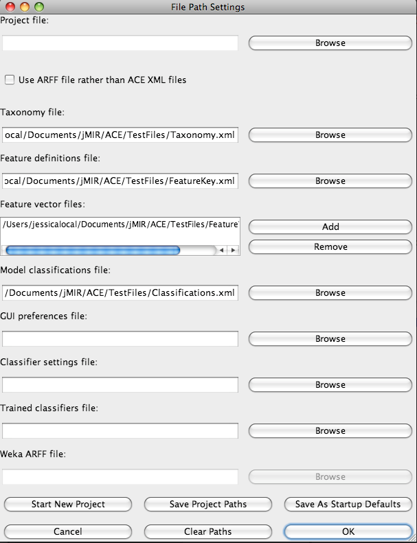

| Load Configuration Files Dialog Box |
|---|
Panel Overview
The File Path Settings dialog box can be used to find, store, and edit ACE configuration file paths. These are the component files of an ACE project. This window can be accessed by clicking Load Configuration Files in the File menu.
Panel Contents
The Project file field holds the path of the currently loaded ace_project_file. The Browse button next to this field allows it to be updated.
The Use ARFF file rather than ACE XML files check box specifies whether or not Weka ARFF files are to be used rather than ACE feature_vector_files, taxonomy_files, feature_key_files and classifications_file. Selecting or deselecting this box deactivates and activates the appropriate GUI elements.
The Taxonomy file field holds the path of the currently specified ACE taxonomy_file. The Browse button next to this field allows it to be updated. This file holds the taxonomy to classify instances into.
The Feature definitions file field holds the path of the currently specified ACE feature_key_file. The Browse button next to this field allows it to be updated. This file holds details of the features which are used for classification.
The Feature vector files field holds the paths of the currently specified ACE feature_vector_files. The Add button next to this field allows files to be added to the list, and the Remove button deletes any currently selected files. This file holds extracted feature values for instances to be classified.
The Model classifications file field holds the path of the currently specified ACE classifications_file. The Browse button next to this field allows it to be updated. This file holds model classifications for instances. This can be used to train or test classifiers.
The GUI preferences file field holds the path of the currently specified ACE gui_preferences_file. The Browse button next to this field allows it to be updated. This file holds user preferences for configuring the ACE interface.
The Classifier settings file field holds the path of the currently specified ACE classifier_settings_file. The Browse button next to this field allows it to be updated. This file holds preferences for performing classifications and classifier optimization searches.
The Weka ARFF file field holds the path of the currently specified Weka ARFF file. The Browse button next to this field allows it to be updated. This file is an alternative to the native ACE file formats. It can hold feature values of instances, model classifications and an implied flat taxonomy.
The Start New Project button Brings up a dialog box that allows the user to choose the name of a new ACE project file and where to save it. The user is asked if s/he would like to copy the files referred to by the existing GUI fields to the new project directory. If so, they are copied to a new subdirectory with the same name as the project file.
The Save This Project button saves the paths displayed in the GUI fields to the path specified in the Project file field. If this field is empty, then the user is presented with a Start New Project dialog box.
The Save As Startup Defaults button stores the paths currently entered in the dialog box to disk so that they will be the defaults loaded when the ACE GUI is next run.
The Cancel button cancels all changes made in this dialog box, restores previously stored entries to the fields and hides this dialog box.
The Clear Paths button clears all GUI fields in this dialog box.
The OK button stores all changes made in this dialog box and hides this dialog box.
Screen Shot

Questions and Comments